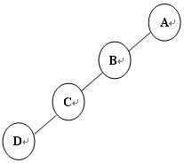
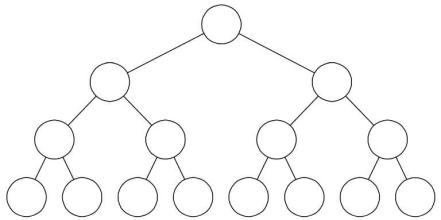
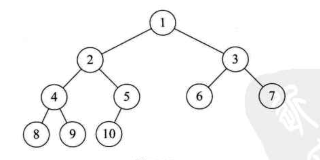
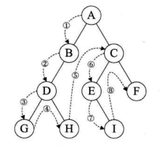
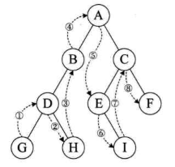
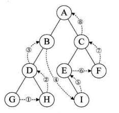
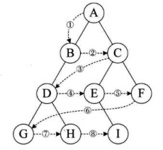

二叉树的定义
二叉树是n(n>=0)个结点的有限集合,该集合或者为空集.或者由一个根结点和两颗互不相交的,分别称为根结点的左子树和右子树的二叉树组成.
二叉树的特点
- 每个结点最多有两棵子树.
- 左子树和右子树是有顺序的.
- 即时树中某结点只有一颗子树,也要区分它是左子树还是右子树.
特殊二叉树
斜树

所有结点只有左子树的二叉树叫做左斜树,反之成为右斜树,这这两类统称为斜树.
满二叉树

在一颗二叉树中所有分之结点都存在左子树和右子树,并且所有叶子都在同一层上,这样的二叉树成为满二叉树.
完全二叉树

对一棵具有n个结点的二叉树按层序编号,如果编号i (1 <= i <= n)的结点与同样深度的满二叉树中编号为i的结点在二叉树中位置完全相同,则称之为完全二叉树.
二叉树的性质
- 在二叉树第i层上至多有2^(i-1)个结点
- 深度为k的二叉树至多有2^k - 1个结点
- 对任何一棵二叉树,如果其终端结点数为n0,度为2的结点数为n2,则n0 = n2 + 1
- 具有n个结点的完全二叉树的深度为[log2 n] + 1
- 一棵有n个结点的完全二叉树,结点按层序编号,任一结点i有: 2i > n 则i无左孩子,否则左孩子为2i.如果2i + 1 > n则i无右孩子,否则右孩子为2i + 1
二叉树储存结构
二叉树顺序储存结构
对于树这种一对多的结构,顺序储存结构是不合适的,但是二叉树是一种特殊的树,可从上面的二叉树的特性5可以看出,顺序储存一样可以很好的体现出相关的关系.不存在的结点设置为^即可.
但是这种储存结构在碰上斜树时,会浪费大量的储存空间.但是对于完全二叉树,或满二叉树是很合适的.
二叉链表
二叉树每个结点最多有两个子结点,一个拥有两个指针域和数据域的链表就是一个常见的二叉链表.
遍历二叉树
二叉树的遍历方式可以细分为四种,下面介绍四中遍历方式.
前序遍历
从根节点开始顺左子树往下遍历,若无左子树就遍历右子树,若是叶节点就返回值上一个有右子树位置继续遍历.
如下图遍历顺序为:ABDGHCEIF

|
|
中序遍历
根节点的左子树直往下,找到无左子树的结点,以此为起点依次遍历右子树,无右子树则遍历父结点,直至根节点,直接根节点的右子树顺着其左子树直往下找到无左子树结点,再次进行遍历.
如下图遍历顺序为:GDHBAEICF

|
|
后序遍历
从左到右,先叶子后结点的方式遍历左右子树,最后访问根节点.
如下图遍历顺序为:GHDBIEFCA

|
|
层序遍历
从树的第一层,即根节点开始,由上至下逐层遍历,同层中由左到右遍历其结点.
如下图遍历顺序为:ABCDEFGHI

|
|
二叉树本身就是一个链表,这里遍历时却使用了另一层链表来记录其顺序实在不可取,但是想不出不使用其他对象来完成层序遍历的方式,故这里使用了队列来进行遍历.
二叉树遍历结果推导
在只知道前序和后序遍历结果时,无法推导出正确的二叉树.想要推导出正确的二叉树,中序遍历结果必不可少.
内容引自大话数据结构